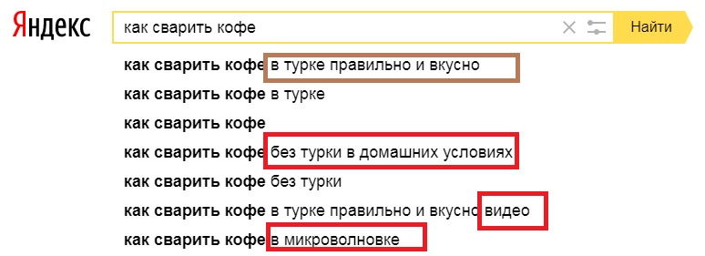
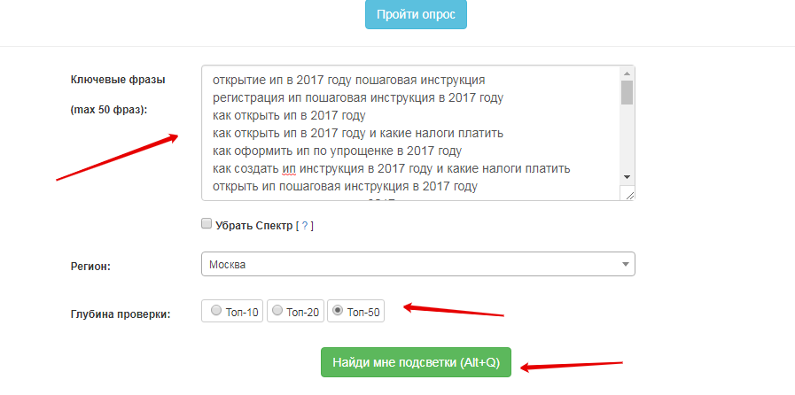

Ключевые слова и кластеризация запросов
Ключи или ключевые запросы – это слова, которые пользователи вбивают в поиск и могут найти ваш сайт. Поговорим, как собирают и кластеризируют ключевые запросы, чтобы правильно готовить под них контент.
Как собирать ключевые слова
Когда пишете SEO-текст, подумайте, как формулируют свои проблемы пользователи. Частая ошибка экспертов своего дела, которые пишут тексты, – неверное представление о запросах. Обычные пользователи, которые не являются экспертами в вашей тематике, могут спрашивать совершенно по-другому. Запросы для SEO-статьи надо искать, а не придумывать наугад, и в этом вам помогут сервисы «Яндекса» и Google.
Для начала продумайте основные маркерные запросы, то есть ключевые слова, которые определяют тематику. Например, мы пишем статью для бухгалтеров про расчет отпускных. Маркерами могут быть фразы: «как оплатить отпуск», «как предоставить отпуск», «как оформить приказ на отпуск» и пр.
Когда собираете ключевые запросы, обратите внимание на запросы, по которым пользователи ищут информацию о вашей тематике. Также изучите формулировки на страницах конкурентов. Кроме того, понаблюдайте, какие слова-маркеры чаще всего используют ваши текущие клиенты.
Далее проверьте все маркеры в сервисе Wordstat от «Яндекса». Поочередно введите фразы в строку поиска и вы увидите, как часто люди ищут именно такие формулировки. Проверьте максимальное количество запросов по вашей тематике.
Как узнать сценарии покупки для верного сбора ключей
Опыт Полины Росс, ecommerce-директора группы компаний SimpleWine
Рекомендую узнавать сценарии, при которых клиентам нужен ваш продукт, у самих клиентов. Некоторые сценарии покажутся очевидными, но их все равно нужно проверять, спрашивать клиентов. Мы, благодаря опросам, выделили шестнадцать поводов покупки вина: для себя, в подарок, к праздничному столу, в путешествие и пр. Вино для себя – базовое, легкое и недорогое. Вино в подарок – новое, необычное и подороже.
Каждый сценарий, по которому у вас покупает клиент, нужно закрыть статьей или подборкой. Если клиенты путешествуют, а у нас нет подборок вина для путешествий, мы не закрываем эту потребность клиента. А чем больше потребностей мы можем закрыть контентом на сайте, тем больше точек касания с потребителем у нас будет. Соответственно, это отразится на частоте покупок и выручке.
Свойства ключевых слов
У ключей есть еще два свойства: частотность и сезонность. Частотность показывает, сколько раз за месяц люди искали конкретный запрос. А учет сезонности помогает понять, в какое время года люди больше всего интересуются темой.
Частотность. Лучший способ определить частотность слова или фразы – вбить ее в Wordstat в кавычках. Так вы узнаете, сколько людей искало это конкретное слово. Если вбить без кавычек, вы увидите еще и фразы, которые просто содержат это слово. Например, при слове «диван» без кавычек Wordstat покажет данные еще и по запросам «красный диван», «синий диван» и пр. Частотность слова в кавычках называется «точное вхождение».
Сезонность. Wordstat показывает частотность только за последний месяц, а в разное время людей интересуют разные вещи. Например, рецепт салата «Оливье» больше всего ищут в декабре. Точно так же, как и адреса катков: летом они почти не нужны, но зимой спрос на них возрастает.
Сезонность важно экспертно оценить, чтобы не ошибиться в планировании. Если сейчас у ваших ключевых запросов низкая частотность, это не значит, что тема никому не нужна и ее можно выкинуть. Возможно, сейчас просто не сезон.
Мы много пишем про сезонную тематику, и у нас есть лайфхак: заранее распределять запросы по месяцам. Если мы понимаем, что тема сезонная, то в контент-плане указываем месяц ее максимальной частотности.
Например, мы пишем в том числе для учителей, а их работа циклична: в августе – педсовет, в сентябре – прием детей, в июне – ЕГЭ и пр. То есть в каждый момент времени учителей интересует определенная тема. Поэтому если мы знаем, что ЕГЭ будут сдавать в июне, то в апреле-мае надо актуализировать и ранжировать по запросам все нужные материалы.
Таким образом, когда составляете контент-план, учитывайте и частотность, и сезонность. Частотность позволит понять, насколько востребованной будет статья, а сезонность – когда текст лучше выпустить, чтобы вызвать максимальный интерес.
Кластеризация запросов
После того как вы нашли несколько наиболее популярных запросов по теме, кластеризуйте, то есть сгруппируйте их. Это нужно, так как пользователи часто формулируют одно и то же разными словами. Например, могут вбить в поиск не «как оформить приказ на отпуск», а «как сделать приказ на отпуск», «как написать приказ на отпуск» и пр. Сгруппировать небольшие объемы запросов, до 1000 ключей, можно бесплатно. Например, с помощью сервисов Simple SEO Tools и Semantist.
Когда загрузите в сервис все ключи, которые у вас есть, задайте стоп-слова: запросы, в ответ на которые поиск не будет показывать вашу статью. Например, таким стоп-словом будет «купить»: в данном случае наш запрос информационный, а не коммерческий. Стоп-словом можно указать и название конкурирующего бренда.
После того как вы загрузите ключевые слова и укажете стоп-слова, сервис вернет вам кластеризованные запросы. Это кучки ключевых слов, которые сервис сгруппировал по одной теме. Например, в кластере по оформлению отпуска могут быть такие ключевые слова:
- оформить отпуск,
- отпускные расчет,
- очередной отпуск,
- форма Т-60.
Из примеров видно, что ключевые слова – это не обязательно синонимы. Например, во фразе «форма Т-60» нет ни слова об отпуске, однако эту форму бухгалтеры используют для расчета отпускных.
В одном кластере может быть от двух запросов и до бесконечности. Это не значит, что все эти ключи нужно вписать в контент, но изучить и сгруппировать их очень важно. Так вы поймете, что одна статья закрывает один целый кластер. То есть писать одну статью про оформление отпуска, вторую – про расчет отпускных, а третью – про форму Т-60 не нужно. Все эти запросы вы удовлетворите одним текстом.
Разберем пример
Чтобы статья отвечала на все вопросы из кластера, надо отделить главные ключи от дополнительных слов. Главные ключи отвечают на вопрос: о чем будет статья? Дополнительные слова – это слова, которыми люди дополняют свои запросы, когда вбивают их в поисковик. На картинке ниже дополнительные слова выделены красным.

Вместе с дополнительными словами надо собрать тематические слова. Это слова, которые раскрывают тематику статьи и чаще других встречаются в статьях, отвечающих на запросы пользователей. Использование тематических слов показывает поисковику, что статья раскрывает заявленную тему.
| Весь кластер | Отобранные ключи |
|---|---|
открытие ип в 2017 году пошаговая инструкция регистрация ип пошаговая инструкция в 2017 году как открыть ип в 2017 году как открыть ип в 2017 году и какие налоги платить как оформить ип по упрощенке в 2017 году как создать ип пошаговая инструкция в 2017 году и какие налоги платить открыть ип пошаговая инструкция в 2017 году как зарегистрировать ип в 2017 году оформление ип в 2017 году открытие ип в 2017 году регистрация ип в 2017 году как открыть ип самостоятельно в 2017 году как зарегистрироваться ип в 2017 году документы для ип в 2017 году пошаговое открытие ип в 2017 году стоит ли открывать ип в 2017 году как оформить ип в 2017 году процедура открытия ип в 2017 году как создать ип самостоятельно в 2017 году регистрация ип на енвд пошаговая инструкция в 2017 году как оформить ип по упрощенке в 2017 году сроки открытия ип в 2017 году как оформить ип в 2017 году самостоятельно как открыть ип в 2017 году пошаговая инструкция регистрация ип в 2017 году необходимые документы как открыть ип на енвд в 2017 году пошаговая инструкция регистрация ип на усн в 2017 году | открытие ип в 2017 году пошаговая инструкция как открыть ип в 2017 году и какие налоги платить |
Копируем левую колонку на проверку в онлайн-сервис. За раз сервис может проанализировать максимум 50 фраз.

Копируем слова из таблицы «Лемматизированные слова из запросов» и вычеркиваем слова, которые есть в отобранных запросах:
- открывать,
- ип,
- пошаговый,
- инструкция,
- 2017,
- налог,
- платить,
- оформить,
- 2017,
- год.
На практике:
Ключ: как открыть ип в 2017 году и какие налоги платить.
Дополнительные слова: самостоятельно, документы, енвд, создавать, срок, необходимый, стоить, оформление, зарегистрировать, процедура.
Возможный вариант с дополнительными словами в тексте. Как самостоятельно открыть ИП в 2017 году и какие налоги платить. Как открыть ИП в 2017 году на упрощенке.
Тематические слова. Их достаточно скопировать из таблицы «Слова, задающие тематику (лемматизированные)». При необходимости уберите слова, которые встречаются в ключах и дополнительных словах:
- сколько
- стоить
- бизнес
- налоговый
- шаг
- статья
- простой
- подробный
- рассматривать
- система
- начинать
- деятельность
- качество
- форма
- вопрос
- рубль
- россия
- изменение
- процесс
- бесплатно
- лицо.